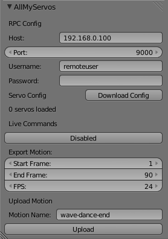

Blender is an open source project for working with 3D models and digital media files. See blender.org for more information.
The AllMyServos Blender addon provides two functions:
1. Send live commands via RPC - Associate armature bones with servos and changes to the armature will be translated to servo movement
2. Upload key-framed animations to AllMyServos - Armature movements are uploaded to AllMyServos via RPC and added to the current specification.
Step 1: Download and install Blender on a computer which meets the minimum requirement (not the Raspberry Pi but on the same LAN)
Step 2: Open the '.blend' file containing the armature.
Step 3: Install and enable the AllMyServos addon for Blender
Step 4: Supply the credentials for the RPC service
Step 5: Click 'Download Config' and confirm the correct number of servos were loaded.
Step 6: Under 'Live commands' click the button displaying the current status (disabled).
Step 7: Move the armature and observe the changes. The servo angle graphs should be updated in AllMyServos and any powered servos should move.
Follow steps 1 - 5 for enabling live commands.
Simply specify the start frame, end frame, FPS and motion name then click Upload. Refresh the motion list after uploading.